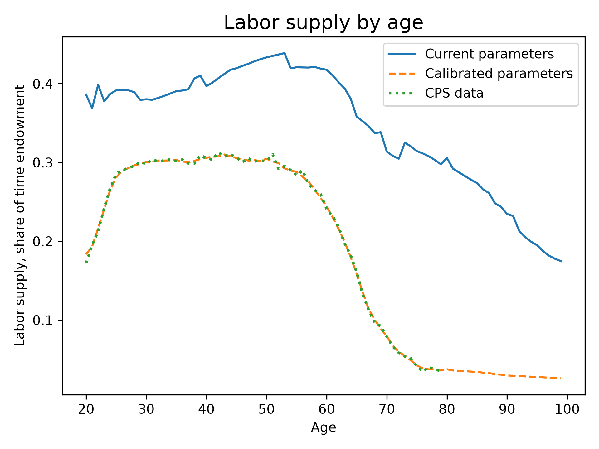
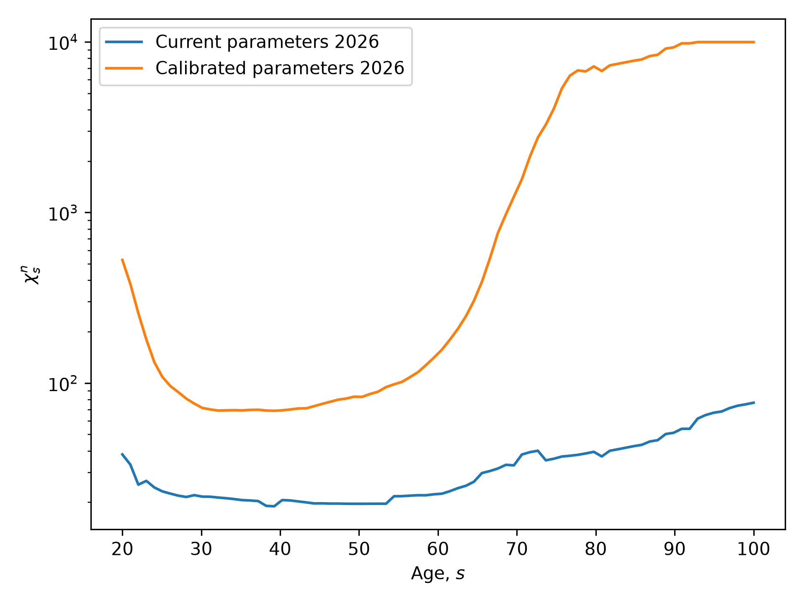
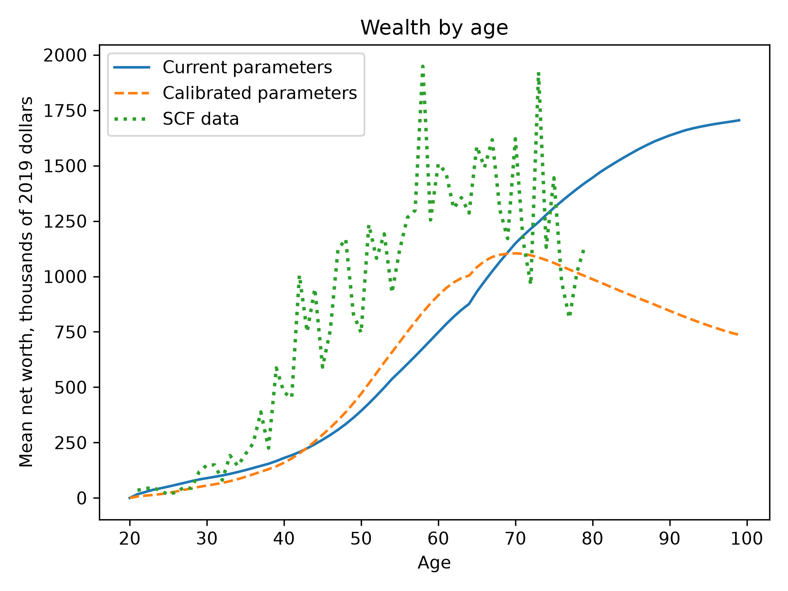

Matching Labor, Wealth, and Income Moments#
This chapter describes how OG-USA calibrates the three household preference objects that govern lifecycle labor supply and saving: the disutility-of-labor profile by age \(\chi^n_s\) (chi_n), the annual discount factor by lifetime-income group \(\beta_j\) (beta_annual), and the strength of the warm-glow bequest motive by lifetime-income group \(\chi^b_j\) (chi_b). The household problem these parameters enter, including the elliptical disutility of labor and the warm-glow bequest motive, is described in the households chapter of the OG-Core documentation. Here we describe the data targets, the calibration method, and the fit.
The values reported in this chapter are the defaults in OG-USA version 0.6.0 and later. The figures compare them with the defaults that preceded them (version 0.5.0), labeled “Current parameters” in the figures because they were generated before the calibrated values were adopted.
Approach#
Earlier attempts to estimate these parameters jointly by simulated method of moments (SMM), solving the full general-equilibrium steady state at every objective evaluation, were slow and poorly identified: \(\beta_j\) and \(\chi^b_j\) both raise the wealth of group \(j\), so aggregate age profiles cannot tell them apart, and hours at ages above 70, where the decline in the data is retirement, dominated an objective that the model, which has no participation margin, cannot fit.
OG-USA instead uses a nested calibration that exploits the structure of the problem. The code is in ogusa/calibrate_lifecycle.py.
Household-only solve. Given the prices \(r\), \(w\), the composite good price \(\tilde{p}\), transfers, bequests, and the income scaling factor from a general-equilibrium steady state, re-solve only the household Euler equations for every lifetime-income group \(j\). This takes well under a second and is the inner step for everything that follows (
partial_equilibrium_ss).Invert the labor first-order condition for \(\chi^n_s\) so that population-weighted model hours match the data at every age from 20 to 79 (
invert_chi_n).Nonlinear least squares for \(\beta_j\) and \(\chi^b_j\) at fixed prices, with household-only solves as the residual function, targeting the distribution and level of wealth and the shape of the old-age wealth profile (
calibrate_beta_chi_b).General-equilibrium outer loop. Re-solve the steady state, warm-started from the previous solution, and repeat steps 2 and 3 until the parameters and prices settle (
calibrate_lifecycle_preferences).
The calibration runs through the Calibration class with estimate_lifecycle_prefs=True and takes about 30 minutes on one core. The example script examples/run_lifecycle_calibration.py runs it end to end and produces the figures and tables in this chapter.
Data and Targets#
Hours by age. Mean weekly hours worked by single year of age, including those working zero hours, from the Current Population Survey (CPS) Annual Social and Economic Supplement for 2022 and 2023, weighted by the survey weights, expressed as a share of the 112-hour weekly time endowment (\(\tilde{l}\)), and lightly smoothed with a three-year centered window. There is one target for each age 20 through 79.
Wealth shares by lifetime-income group. Net worth shares from the 2019 Survey of Consumer Finances (SCF), with percentile bins equal to the population shares \(\lambda_j\) of the ten lifetime-income groups, so that there is one share target per group. Table 7 lists the shares. The bottom-quarter share is negative in the SCF and the bottom-half share is about one percent. A deterministic model with no within-group heterogeneity cannot deliver that, because young households of every group fill the bottom percentiles, so the bottom two bins are excluded from the targets and groups 1 to 3 share a single \(\beta\).
Bin (percentile) |
\(\lambda_j\) |
SCF share |
|---|---|---|
0 to 25 |
0.25 |
-0.005 |
25 to 50 |
0.25 |
0.019 |
50 to 70 |
0.20 |
0.055 |
70 to 80 |
0.10 |
0.056 |
80 to 90 |
0.10 |
0.110 |
90 to 99 |
0.09 |
0.392 |
99 to 99.5 |
0.005 |
0.092 |
99.5 to 99.9 |
0.004 |
0.140 |
99.9 to 99.99 |
0.0009 |
0.089 |
99.99 to 100 |
0.0001 |
0.051 |
Wealth level. Mean SCF net worth divided by mean SCF pre-transfer income (wages, business income, interest, dividends, capital gains, and retirement income, before government transfers), which is the concept closest to the model’s before-tax income. The ratio is 8.4. This moment pins down the average level of \(\beta\).
Old-age wealth tilt. For each wealth bin, the ratio of mean net worth at ages 80 to 89 to mean net worth at ages 60 to 64 in the SCF. Households in the data decumulate slowly: the ratio is 0.75 to 0.85 for bins above the median. This is what separates the bequest motive from patience, because a stronger \(\chi^b_j\) holds wealth up at old ages for a given \(\beta_j\).
Bequest flow. Wealth of decedents over wealth of the living, computed by weighting the SCF wealth-by-age profile with the model’s own mortality rates on both sides so that the data and model concepts match. The ratio is 0.017.
Moments that do not depend on the preference parameters to first order, or that the model cannot match for structural reasons, are not targeted: the income Gini (the earnings process is exogenous), the wealth Gini and the variance of log wealth (dominated by within-group age variation), and hours above age 79.
Calibrating the Disutility of Labor \(\chi^n_s\)#
The household’s labor supply first-order condition in the steady state (see the OG-Core household chapter) is
is the marginal disutility of labor under the elliptical utility function with parameters \(b\) and \(\upsilon\). There is one free \(\chi^n_s\) for each age and one target, the population-weighted mean of hours at that age, so the problem is exactly identified. Holding the left-hand side of (32) fixed, the value of \(\chi^n_s\) that delivers the target hours is
where \(\bar{n}_s\) is the mean over lifetime-income groups weighted by the steady-state population distribution \(\omega_{s,j}\). Because consumption on the left-hand side responds to the change in hours, the update is applied and the household block re-solved a few times; the largest absolute log gap between model and data hours falls below 0.001 in three to five iterations. Values are clipped to the ParamTools range for chi_n, and any ages where the bound binds are reported.
Figure 12 shows the resulting fit. The previous default profile matched hours only in the middle of working life. The calibrated profile matches the CPS at every age, including the rise from age 20 to the late twenties and the decline after 60.


Fig. 12 Steady-state labor supply by age as a share of the time endowment, previous default parameters, calibrated parameters, and CPS data#
Matching hours after age 65 requires a much steeper \(\chi^n_s\) profile than before, shown on a log scale in Figure 13. The previous default profile ranged only from about 20 to 40 across all ages. Hours in the CPS fall from 0.30 of the endowment at age 50 to 0.04 at age 75, and that decline is almost entirely participation, which the model represents only through the intensive margin. With a Frisch elasticity of 0.4 the elliptical disutility has \(\upsilon \approx 2.86\), so moving mean hours from 0.30 to 0.04 needs \(\chi^n_s\) to rise by a factor of roughly 60. Table 8 lists hours and \(\chi^n_s\) at selected ages.


Fig. 13 Disutility of labor \(\chi^n_s\) by age on a log scale, previous default and calibrated parameters#
Age |
CPS hours (share of endowment) |
Model hours |
Previous default \(\chi^n_s\) |
Calibrated \(\chi^n_s\) |
|---|---|---|---|---|
20 |
0.184 |
0.184 |
38.1 |
526.2 |
25 |
0.281 |
0.281 |
23.2 |
108.6 |
30 |
0.301 |
0.301 |
21.6 |
71.4 |
40 |
0.306 |
0.306 |
20.6 |
69.2 |
50 |
0.305 |
0.305 |
19.6 |
82.9 |
60 |
0.244 |
0.244 |
22.4 |
157.0 |
65 |
0.159 |
0.158 |
29.7 |
392.4 |
70 |
0.079 |
0.079 |
38.1 |
1,565.7 |
75 |
0.043 |
0.043 |
37.1 |
5,331.1 |
79 |
0.036 |
0.036 |
39.5 |
7,181.7 |
The large values at ages 20 and above 70 are worth noting. At 20, hours in the CPS are low because many are in school, which the model also lacks. Above 70, \(\chi^n_s\) in the thousands is what the intensive margin needs to replicate retirement. Both are consequences of matching the data with the model as it is, and both were checked along the transition path: the time-path solver converged for a baseline and a reform with Euler errors at machine precision.
Calibrating Patience \(\beta_j\) and the Bequest Motive \(\chi^b_j\)#
With \(\chi^n_s\) concentrated out, \(\beta_j\) and \(\chi^b_j\) are chosen by bounded nonlinear least squares at fixed prices. The free parameters are additive shifts to \(\text{logit}(\beta_j)\), one per group (groups 1 to 3 tied, as explained above), and to \(\log(\chi^b_j)\), one per group with the four groups in the top one percent tied, for 8 + 5 = 13 free parameters. The residuals are the logs of model over data for 15 targets: the eight wealth shares for bins above the bottom half, the wealth-to-income ratio, the five old-age tilts for bins above the bottom half, and the bequest-flow ratio. Every residual evaluation is a household-only solve; a solve that fails to converge returns a bounded penalty. The Jacobian is formed by forward differences with an absolute step of 0.001 in the transformed space, every column from the same household guess, so that solver noise does not enter the derivatives.
Table 9 reports the calibrated values with standard errors from the sandwich form described in Section Standard Errors and Overidentification. The previous defaults were \(\beta_j\) rising from 0.91 to 0.995 across the ten groups and \(\chi^b_j = 80\) for every group. Patience rises with lifetime income, from 0.953 for the bottom half to the ParamTools ceiling of 0.9999 for groups 6 to 9 (the 90th to 99.99th percentiles). The bequest motive rises from 9 for the bottom half to 76 for the top one percent.
Group \(j\) |
Percentiles |
\(\beta_j\) |
s.e. |
\(\chi^b_j\) |
s.e. |
|---|---|---|---|---|---|
1 to 3 |
0 to 70 |
0.953 (group 3: 0.959) |
0.004 |
9.1 |
1.2 |
4 |
70 to 80 |
0.959 |
0.023 |
24.7 |
6.3 |
5 |
80 to 90 |
0.933 |
0.024 |
20.0 |
5.9 |
6 |
90 to 99 |
0.9999 |
at bound |
33.1 |
9.4 |
7 to 9 |
99 to 99.99 |
0.9999 |
at bound |
75.9 |
10.3 |
10 |
99.99 to 100 |
0.997 |
0.005 |
75.9 |
10.3 |
Table 10 shows the fit of the wealth shares. The previous defaults put too much wealth in the bottom 90 percent and too little in the top one percent. The calibrated parameters match the 80 to 90 and 90 to 99 bins and the top three bins to within five percent. The 99 to 99.5 bin remains 40 percent below the data: group 7’s ability profile is not far enough above group 6’s for patience alone to separate them, and both sit at the \(\beta\) ceiling.
Bin (percentile) |
SCF data |
Previous default |
Calibrated |
|---|---|---|---|
0 to 25 |
-0.005 |
0.022 |
0.009 |
25 to 50 |
0.019 |
0.064 |
0.037 |
50 to 70 |
0.055 |
0.119 |
0.063 |
70 to 80 |
0.056 |
0.099 |
0.049 |
80 to 90 |
0.110 |
0.158 |
0.108 |
90 to 99 |
0.392 |
0.345 |
0.390 |
99 to 99.5 |
0.092 |
0.036 |
0.056 |
99.5 to 99.9 |
0.140 |
0.070 |
0.147 |
99.9 to 99.99 |
0.089 |
0.052 |
0.090 |
99.99 to 100 |
0.051 |
0.035 |
0.051 |
Table 11 shows the level and old-age moments. The old-age tilts for the middle of the distribution (50 to 90th percentiles) are matched to within five percent, where the previous defaults had the elderly holding twice the wealth of 60 to 64 year olds. Two gaps remain, and they are the same gap seen from two sides. The rich in the model do not decumulate (tilt of 1.0 for the 90 to 99 bin against 0.76 in the SCF), so the bequest flow is overstated. And the wealth-to-income ratio is 5.4 against 8.4 in the data even with four groups at the \(\beta\) ceiling, because the middle groups’ betas are held down by their share targets. The SCF wealth concentration is more than the model’s ability profiles can generate through patience alone at a 3.5 percent portfolio return. Closing it would need return heterogeneity, a larger ability gap between the top groups, or a bequest motive that strengthens with wealth more than the by-group \(\chi^b_j\) allows.
Moment |
SCF data |
Previous default |
Calibrated |
|---|---|---|---|
Mean net worth over mean pre-transfer income |
8.43 |
6.09 |
5.43 |
Bequest flow over wealth of the living |
0.017 |
0.043 |
0.030 |
Mean net worth 75 to 79 over 60 to 64 |
0.80 |
1.68 |
1.07 |
Tilt (80 to 89 over 60 to 64), bin 50 to 70 |
0.87 |
2.43 |
0.83 |
Tilt, bin 70 to 80 |
0.76 |
1.83 |
0.74 |
Tilt, bin 80 to 90 |
0.75 |
1.68 |
0.73 |
Tilt, bin 90 to 99 |
0.76 |
1.95 |
1.04 |
Tilt, top 1 percent |
0.84 |
1.29 |
1.02 |
Figure 14 plots mean net worth by age in 2019 dollars, converting model savings with the steady state’s income scaling factor and aligning wealth observed at age \(a\) with the saving chosen at \(a - 1\). The calibrated profile peaks near age 70 and declines afterward, as in the SCF, whereas the previous defaults kept wealth rising to age 100. Both parameter sets fall below the SCF between ages 40 and 65, which is the wealth-level gap in Table 11 seen by age.


Fig. 14 Mean net worth by age in thousands of 2019 dollars, previous default parameters, calibrated parameters, and SCF data#
General-Equilibrium Consistency#
Steps 2 and 3 hold prices fixed, but the calibrated parameters change saving and labor supply and therefore the interest rate, wage, bequests, transfers, and the income scaling factor. The outer loop re-solves the general-equilibrium steady state after each pass, warm-starting OG-Core’s outer root finder from the previous solution (15 to 20 seconds against 70 to 150 seconds for a cold solve), and repeats the inner steps at the new prices. Parameter updates are blended in the transformed space with a damping factor that halves whenever the parameter change fails to shrink by ten percent from one pass to the next. The loop stops when the largest change in the transformed parameters is below 0.01 and the largest relative price change is below 0.001. The parameter tolerance is the looser of the two because \(\beta_j\) and \(\chi^b_j\) trade off along a ridge that leaves the moments unchanged once prices have settled.
Table 12 records the run that produced the default parameters. It converged in seven passes without any reduction in damping. The interest rate feedback is visible in the first passes: the higher betas raise saving, the portfolio return falls from 3.7 to 3.55 percent, and the inner steps adjust.
Pass |
Max parameter change |
Max price change |
\(\chi^n\) iterations |
Household solves in the \(\beta\), \(\chi^b\) step |
Portfolio return \(r_p\) |
Wage \(w\) |
|---|---|---|---|---|---|---|
1 |
5.68 |
0.637 (bequests) |
5 |
1,740 |
0.0369 |
1.373 |
2 |
1.87 |
0.148 (factor) |
4 |
212 |
0.0367 |
1.376 |
3 |
0.196 |
0.043 |
3 |
127 |
0.0359 |
1.387 |
4 |
0.089 |
0.018 |
2 |
353 |
0.0357 |
1.391 |
5 |
0.014 |
0.007 |
1 |
239 |
0.0356 |
1.393 |
6 |
0.005 |
0.002 |
2 |
141 |
0.0355 |
1.393 |
7 |
0.002 |
0.001 |
1 |
113 |
0.0355 |
1.394 |
Standard Errors and Overidentification#
The least-squares step is a generalized method of moments estimator with an identity weighting matrix on the weighted log moments, so standard errors follow from the Jacobian \(G\) of the residuals at the solution. With \(V_d\) the covariance of the data targets from a row bootstrap of the SCF and CPS (200 draws), carried to the merged targets and converted to log units, the parameter covariance is \((G'G)^{-1} G' V_r G (G'G)^{-1}\), and standard errors for \(\beta_j\) and \(\chi^b_j\) follow from the delta method. Parameters at a bound are treated as fixed and receive no standard error. The standard errors in Table 9 are small because the row-bootstrap sampling variances of SCF shares are small; they understate the true uncertainty, since the SCF’s five implicates per household are resampled as independent draws and the top bin rests on fewer than one hundred households.
The overidentification statistic is 2,234 on 6 degrees of freedom (15 targets, 9 free parameters not at a bound), and rejects. With sampling variances this small, the rejection is the statistical face of the structural gaps described above rather than evidence about the parameters.
Validation Along the Transition Path#
Because \(\chi^n_s\) in the thousands at ages 75 to 79 is the part of the calibration most likely to trouble the time-path solver, the calibrated parameters were checked on a baseline transition path and on a reform that raises the corporate income tax rate to 35 percent. Both converged in about eight minutes with six Dask workers, with maximum household Euler errors of order \(10^{-12}\) on both paths. The reform’s effects have the expected signs: output falls 0.7 percent and the capital stock 1.9 percent on average over the first ten years. The script examples/validate_lifecycle_time_path.py reproduces this check.
Reproducing the Calibration#
from ogusa.calibrate import Calibration
c = Calibration(
p,
estimate_lifecycle_prefs=True,
lifecycle_params_path="lifecycle_prefs.json",
)
p.update_specifications(c.get_dict()) # includes beta_annual, chi_b, chi_n
lifecycle_params_path behaves like the tax-function cache: if the file exists and its dimensions match the model it is read; otherwise the calibration runs and writes it. The lifecycle_config argument takes a LifecycleCalibrationConfig (moment set, SCF income concept, ages) and lifecycle_options a PreferenceCalibrationOptions (whether \(\chi^b_j\) varies by group or by a common scale, whether the bottom bin is excluded, the bequest-flow weight, and bounds). The example script writes the moment comparison, the outer-loop history, the standard errors, and the figures in this chapter:
uv run python examples/run_lifecycle_calibration.py --standard-errors
The design notes, the review that motivated the approach, and the results of every phase of its development are recorded in LIFECYCLE_CALIBRATION_PLAN.md in the repository root, and a guide to porting the approach to other country calibrations with thinner data is in PREFERENCE_CALIBRATION_GUIDE.md.